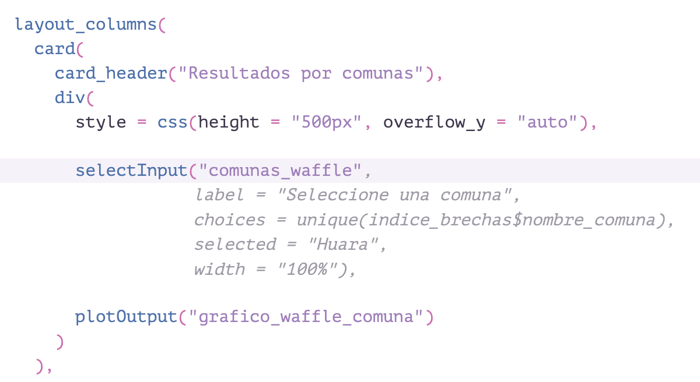
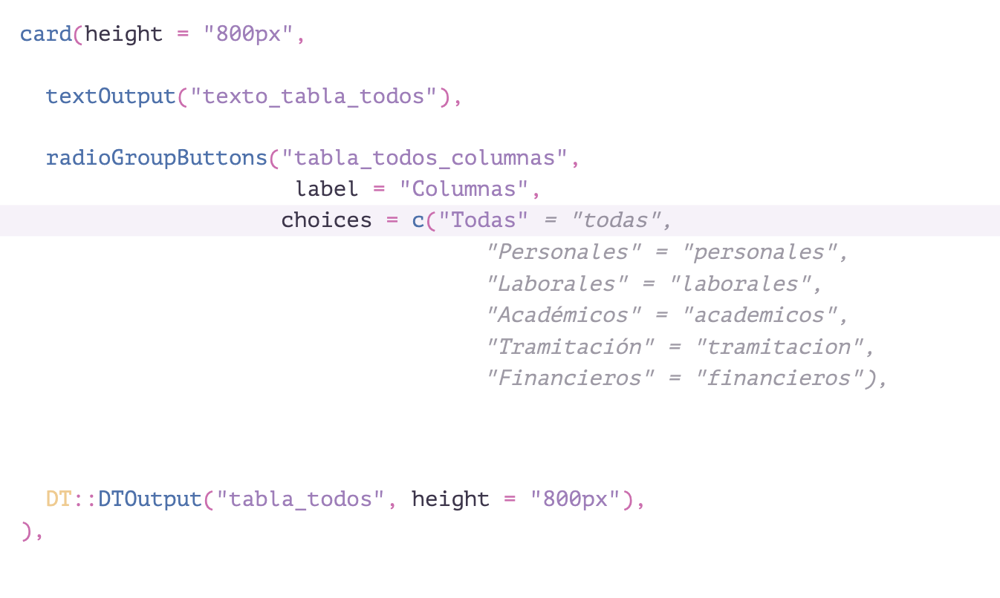
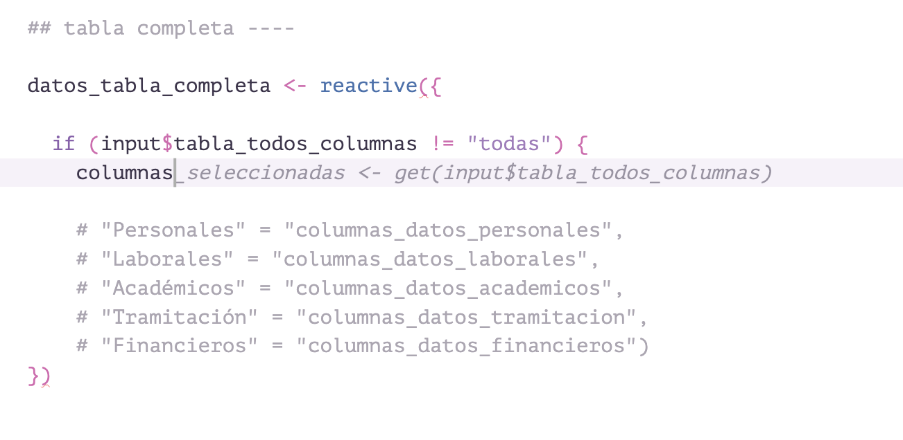
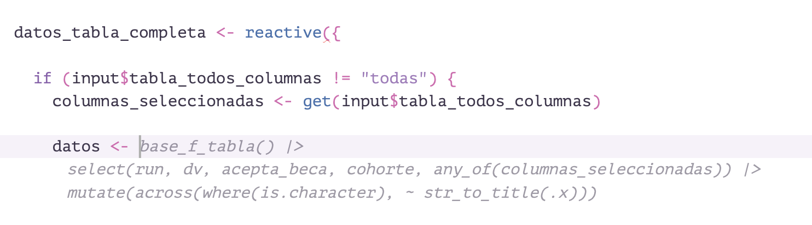
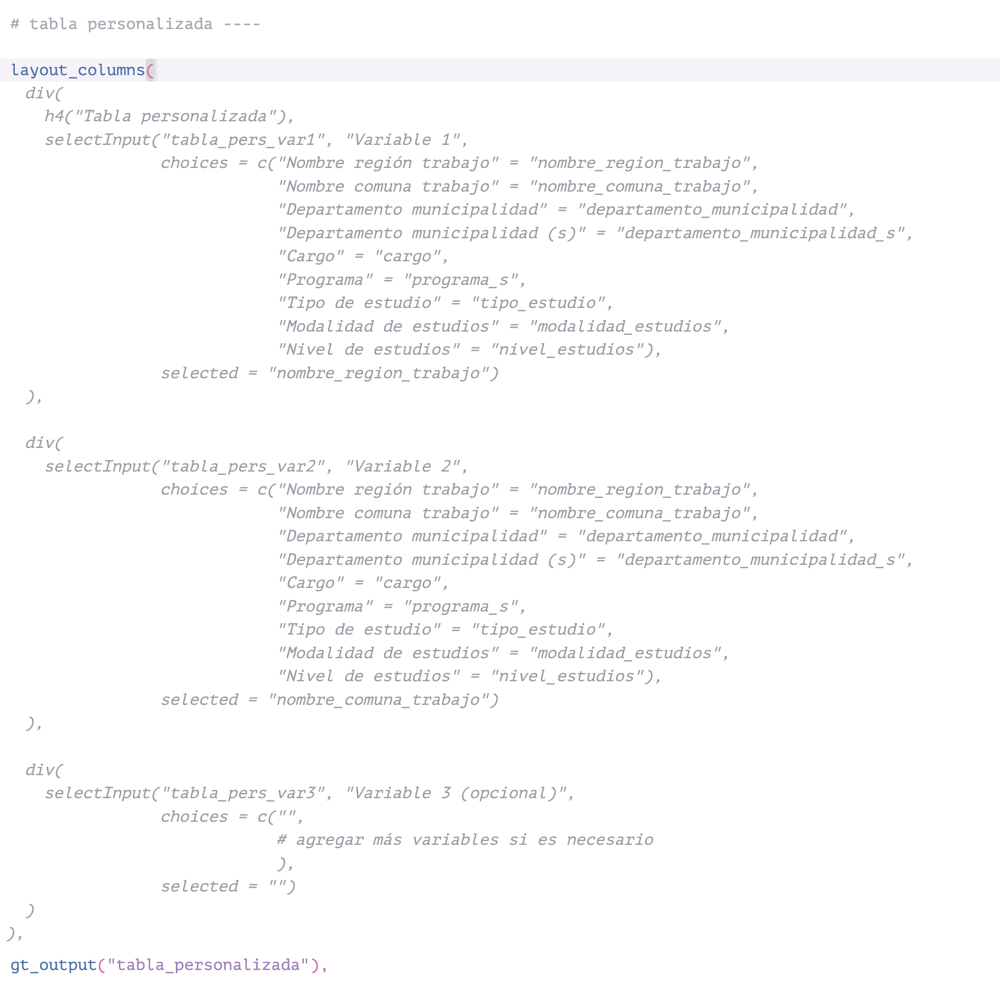
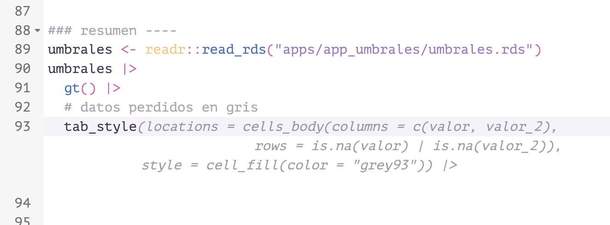
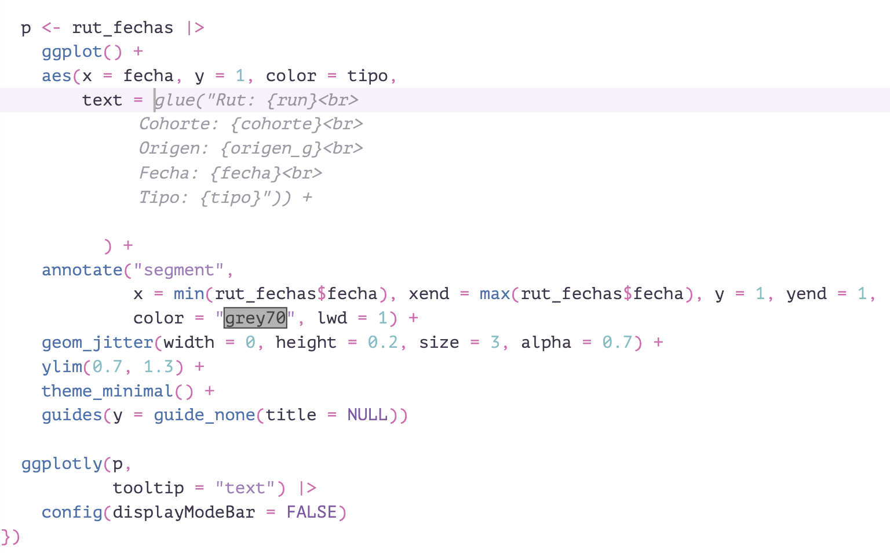

Sugerencias y autocompletado de código con GitHub Copilot
9/6/2025

Uno de beneficios concretos de los avances en inteligencia artificial generativa son las herramientas de autocompletado de código1. Una de estas herramientas es GitHub Copilot, la cual puede integrarse directamente en RStudio para ayudarte a programar en R. En este post mostraré algunos casos de uso real donde Copilot me ha servido.
¿Para qué sirve?
Copilot es un servicio de autocompletado de código que puede integrarse directamente en RStudio. Sirve para recibir sugerencias de código mientras programas, lo que puede ayudarte a escribir código más rápido. Esta herramienta utiliza modelos de lenguaje entrenados con una gran cantidad de código fuente disponible públicamente, lo que le permite ofrecer sugerencias contextuales basadas en el código que ya has escrito.
Instalación
En las opciones globales de RStudio, entra a el último ítem, titulado Copilot. Presiona Activar, y se te pedirá ingresar un código de verificación en el sitio web de GitHub que aparecerá indicado, usando tu cuenta de GitHub. Visita aquí para más instrucciones.
¿Cómo funciona?
Luego de activar esta herramienta, simplemente empiezas a programar, y cada vez que te detengas, el modelo intentará autocompletar lo que estés escribiendo. Frente a tu cursor aparecerá una sugerencia de código basada en lo que ya hayas escrito y en los contenidos de tu script. El modelo es capaz de predecir lo que quieres programar, según el lugar en el documento en que estés. Presionando la tecla tabulador podrás aceptar la sugerencia e incluirla instantáneamente en tu código.
En la práctica, esto te hará ahorrar tiempo programando tareas simples y repetitivas, ya que en la mayoría de estos casos el modelo logrará adivinar lo que intentas hacer. Pero si intentas hacer algo fuera de lo común o demasiado específico, usualmente el modelo se queda atrás. Otras veces hay un tradeoff entre pequeños errores y el beneficio de tener que escirbir menos.
La herramienta funciona mucho mejor si es que agregas comentarios a tu código, ya sea indicando paso por paso a lo que intentas hacer, o antecediendo los bloques de código con un comentario que describa tu objetivo. Incluso, muchas veces basta con escribir un comentario con lo que intentas hacer para que el modelo lo haga por ti.
También tienes la opción de permitir que el modelo tenga acceso a todos los archivos de tu proyecto. Esto mejora significativamente las sugerencias que te hace el modelo, ya que le entrega una mayor comprensión de lo que intentas hacer. Activa esta opción en las opciones globales de RStudio (index project files).
Ejemplos
Luego de varias semanas utilizándolo, puedo decir que los resultados suelen ser muy positivos.
Copilot entiende el contexto en que escribes; por ejemplo, acá sabe que estoy creando un input para una app Shiny, y lo rellena con la columna correspondiente del dataset correcto: 
En este otro ejemplo, rellena las opciones de un input de Shiny con los valores que definí cientos de líneas arriba en el mismo script, ahorrándome el tener que moverme por el script para encontrar los valores: 
En este caso, el modelo sugiere el uso de la función get() para crear un objeto que contiene a otro objeto basado en el nombre de este segundo objeto, algo bien rebuscado pero que intuyó a partir de lo que tenía escrito al momento:

Luego de lo anterior, el modelo supo que quería usar el objeto creado para seleccionar columnas de un dataframe reactivo! 
Acá me sorprendió mucho, porque sólo con iniciar la creación de unas columnas para la app, el modelo recomienda la estructura entera de tres columnas con tres selectores basados en las variables correspondientes, definidas en otra parte del script. 
Aquí se ve cómo el modelo sugiere contenido cuando declaras lo que estás haciendo con comentarios: 
Y en este caso, el modelo entiende que estoy dentro de un bloque de {ggplot2}, pero que además sabe que estoy usando {plotly}, por lo que me ayuda a crear correctamente el texto de los tooltips del gráfico:

-
Resulta que todas las décadas de colaboración desinteresada y proyectos de código abierto en plataformas como GitHub, de preguntas y respuestas en StackOverflow, y miles de blogs de desarrolladores solidarios, terminaron siendo una mina de oro para entrenar modelos de lenguaje. Producto de la anterior es que hoy proliferan herramientas de inteligencia artificial con abundantes conocimientos de programación. ↩︎